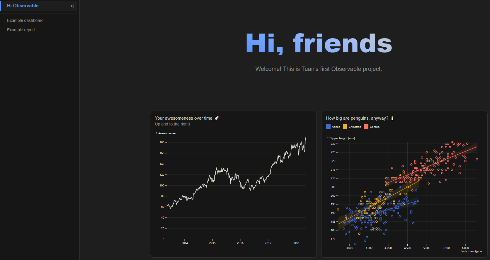

I’ve heard that Observable released their Framework as open source in April 2024, and Quarto also supported Observable natively since version 1.4 (?), thus decided to give it a try. Could not agree more with their slogan:
The best dashboards are built with
code.
This is my repo for the practice.
🚀 Observable Framwork documentation.
Observable Framework — or “Framework” for short — is an open-source static-site generator for data apps. By data app we mean an application that is primarily a display of data. Data apps help you derive insights (to understand) and evaluate potential decisions (to take action).
It can be a set of coordinated interactive visualizations for “self-service” analysis, a live dashboard, or a point-in-time report that combines graphics and prose to present in-depth analysis.
Why use Framework for your data app?
- The power of code: Empowered by D3 and Observable Plot library, there’s no limit to what you can create.
- Polyglot meets the web: Framework is polyglot ~ it brings multiple languages together.
- Static-site architecture: Framework’s data architecture practically forces your app to be fast because data is precomputed at build time. Furthermore, data snapshots can be highly-optimized (and aggregated and anonymized), minimizing what you send to the client.
- Automatic reactivity: Instead of wrangling hooks or signals, you can write declarative code in vanilla JavaScript that automatically re-runs whenever variables change, like a spreadsheet.
- An end-to-end solution: Well-designed tools let developers focus on high-value, creative work and build better apps.
Let’s start!
Inititate a new Project
🚀 Observable Framwork getting started
The prerequisite is we must have npm installed on our machine. Running npm -v, I know that I have version 10.5.0 installed.
We first create a folder and navigate to it:
Then simply run this command to initiate the project:
We gotta fill some basic params:
#| eval: false
#| echo: true
┌ observable create v1.5.1
│
◇ Where to create your project?
│ hi-observable
│
◇ What to title your project?
│ Hi Observable
│
◇ Include sample files to help you get started?
│ No
│
◇ Install dependencies?
│ Yes, via npm
│
◇ Initialize git repository?
│ No
│
◇ Installed! 🎉
│
◇ Next steps… ──────╮
│ │
│ cd hi-observable │
│ npm run dev │
│ │
├────────────────────╯
│
└ Problems? https://observablehq.com/framework/getting-startedWe can now easilly preview the app with npm run dev, and access out dashboard via http://127.0.0.1:3000/. Let’s play a little bit, we can modify the h1 tags in docs\index.md, then the dashboard will be updated once we save the file, instantly. Cool!

Here is the structure of my project (after adding those Data Loader, SQL, etc steps below):
Self hosting
We don’t have to deploy to Observable — Framework projects are simply static sites, so we can host them anywhere. With npm, we can run npm run build, which will generates the dist directory. We can then copy this directory to your static site server or preferred hosting service, like http-server, with command npx http-server dist.
For deployment, see the final section at the bottom of this article.
Write first Data Loader
In Observable project we can write Data Loader in JavaScript, Python, R or any other languages. Data Loader helps you to (1) minimize file sizes and (2) reduce client side processing.
A data loader file has the name like: dataloader.data_extension.engine_extension. For example, with the American weather forecast API we can have 2 kinds of Data Loader as below:
Javascript 🟨:
forecast.json.js
const longitude = -122.47;
const latitude = 37.8;
async function json(url) {
const response = await fetch(url, {headers: {"User-Agent": "(observablehq.com, support@observablehq.com)"}});
if (!response.ok) throw new Error(`fetch failed: ${response.status}`);
return await response.json();
}
const station = await json(`https://api.weather.gov/points/${latitude},${longitude}`);
const forecast = await json(station.properties.forecastHourly);
process.stdout.write(JSON.stringify(forecast));Python 🐍:
forecast.json.py
Run the data loader, testing if it work:
#| eval: false
#| echo: true
node hi-observable\docs\data\forecast.json.js
# or
python hi-observable\docs\data\forecast.json.pyNow if we refresh the dashboard page, the weather forecasting tab should be there. My first run was failed as I miss a comma in JS file 😂. If we change the data loader, the dashboard will change concurrently.
SQL in Observable Framework
Grids, Cards, and Themes
The Grid class allow us to organize multiple vizualization in a denser format, like a dashboard. The Grid class declares a grid container.